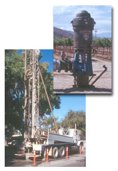

|
 Until 1990, the California Water Well Standards were found in Department of Water Resources Bulletin 74-81 and the Cathodic Protection Well Standards in Bulletin 74-1. In 1990, the Department published Bulletin 74-90 as a supplement to Bulletin 74-81 and as a replacement for parts of the Water Well Standards in Bulletin 74-81. Also, Bulletin 74-90 replaced Bulletin 74-1 for Cathodic Protection Well Standards and added a new section on Monitoring Well Standards. Therefore, it has been necessary to have both bulletins for the complete Water Well Standards. Readers have found that flipping back and forth between the two documents is tedious and confusing. To make the Well Standards easier to use and more widely available, DWR has combined the contents of Bulletins 74-81 and 74-90, integrated the Water Well Standards, and made them available on this web site. Because the wording and formatting are not always consistent in the two bulletins, some modifications were made. Other modifications were made to take advantage of Internet features such as hyperlinks. Modifications include:
California Well Standards Table of Contents Geothermal Heat Exchange Wells - Draft Well Standards, April 1999 |